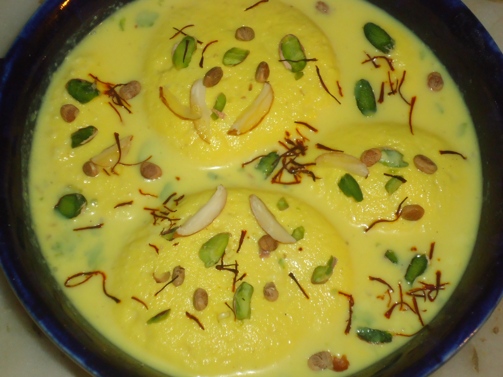

Ras Malai
Home
Why you need to make/eat Ras Malai

Ras Malai is a classic Indian dessert featuring soft, spongy, melt-in-mouth cheese dumplings (chhana) soaked in chilled, sweetened, creamy milk (ras). Infused with cardamom and saffron, it's delightfully light yet rich. Typically garnished with slivered pistachios or almonds, this luscious treat is synonymous with celebrations and makes a delectable finale to Indian meals.
Ingredients
- Whole Milk
- Sugar
- Lemon Juice or Vinegar
- Baking Powder
- All-purpose Flour or Cornstarch
- Saffron Strands
- Rose Water or Kewra Water
- Chopped Pistachios
- Cardamom Pods or Powder
Directions/Steps
- Boil milk and curdle it with lemon juice or vinegar to make fresh cheese (chhana). Drain and rinse well.
- Boil milk and curdle it with lemon juice or vinegar to make fresh cheese (chhana). Drain and rinse well.
- Shape the dough into small, flat, smooth discs.
- Boil sugar and water together to make a thin sugar syrup.
- Gently simmer the dumplings in the sugar syrup until puffed and cooked. Drain.
- Simmer milk until slightly thickened to make the ras. Add sugar, rose/kewra water, cardamom, and soaked saffron.
- Place the warm dumplings into the cooled milk syrup (ras).
- Chill for several hours. Garnish with chopped nuts before serving.